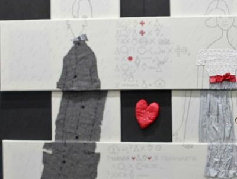
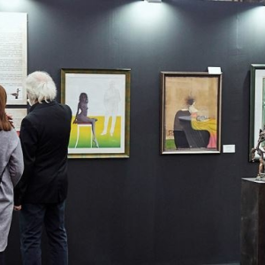
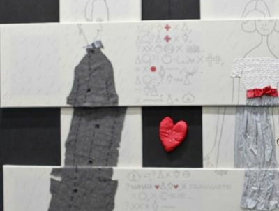
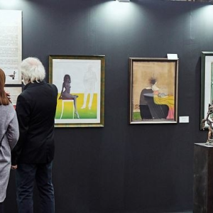

АртПермь
Грядущая «АРТ-Пермь — 2019» станет не только выставочным, но и исследовательским
проектом, в результате которого мы вместе с вами выведем новые формулы в творчестве.
Результат скажет сам за себя, а пока предстоит работа по изысканиям, экспериментам и
классификации.
В рамках выставки «АРТ-Пермь — 2019» скульпторы, художники,
фотохудожники, мастера, поэты, ценители искусства внесут новые смыслы в подачу:
- восприятие и осознание.
- химия отношений, ощущений и реакций
- химические соединения в сплавах, смешение молекул красок
- как в человеке рождаются стихи, идеи для картин, скульптур, инсталляций?
- какое химическое соединение заставляет нас чувствовать вдохновение?
- вычисление внутреннего состава произведения, строение материи, закономерности
- изменений стиля автора, разложения и превращения веществ в эмоциях,
- взаимоотношениях, мыслях и реакциях, а также закономерности образования
новых идей, проектов
Стоимость: 150 рублей.
 



Великая Победа
1914-1945 г. От Великих потрясений к Великой Победе!
Ключом к пониманию структуры экспозиции является мультимедийная инсталляция, сопровождающая зрителя через всю выставку, общей протяженностью более ста метров.
Экспозиция, которую предстоит увидеть посетителям, основана на исторических свидетельствах и документах.
Уникальные электронные кпии материалов, немалая часть которых до недавнего времени хранились в архивах под грифами “секретно” и “совершенно секретно”, предоставлены Государственным архивом
Российской Федерации, Российским государственным архивом социально-политической истории, Центральным архивом ФСБ России, Российским
государственным архивом кинофотодокументов, Государственным центральным
музеем современной истории России и др. Научное консультирование
осуществляли эксперты Института российской истории РАН.
Стоимость: 150 рублей.


Тайны очерского холма. Дети. Драконы. Ученые.
«Тайны Очёрского холма. Дети. Драконы. Ученые» выставка в Музее пермских
древностей и первая книга для детей, изданная музеем. Открытие выставки и презентация книги для детей – кульминационные мероприятия
юбилейного года, посвященного 60-летию начала раскопок в Ежово и 90-летию со дня
рождения П.К. Чудинова.
Как раскопать пермских ящеров? Без научной смелости, мужества и решительности не
обойтись!
В 1952 – 1960 гг. в Очерском районе Пермского края проходили самые масштабные в
СССР палеонтологические раскопки: с помощью бульдозеров был срыт целый Ежовский
холм и открыта новая фауна ящеров – недостающее звено в эволюции наземных существ!
Руководил раскопками пермяк Петр Чудинов. Экспедиция была «вооружена», наряду с
кирками и тяжелой техникой, фотоаппаратом, фиксировавшим, как каждый день, шаг за
шагом, ученые вгрызались в Ежовский холм.
Стоимость: 150 рублей.